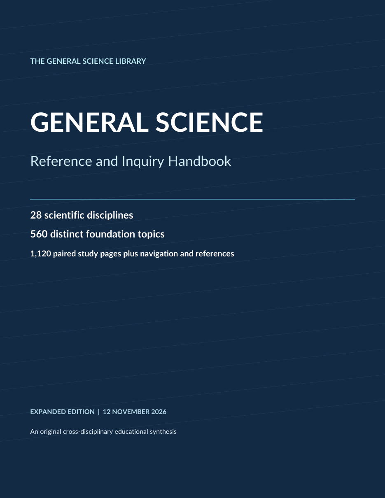

Start with a question
State what can be observed, measured, compared, or explained. Separate the question from the answer you hope to find.
Evidence · measurement · models · revision
The General Science Reference is a searchable, 1,195-page path through the foundations of scientific reasoning and 28 major disciplines. The web experience turns 560 paired topics into a navigable study system—from observation and measurement to models, uncertainty, investigation, and revision.
Evidence boundary: this is a broad educational synthesis and navigation artifact—not original laboratory research, a professional credential, or a substitute for current primary literature and qualified advice in safety-critical decisions.

Reference architecture
The handbook begins with inquiry, measurement, mathematics, and statistics, then moves through physical, chemical, life, Earth, space, computing, engineering, behavioral, social, and public-health sciences. Every field contains 20 topics, and every topic uses a two-page learning loop.
State what can be observed, measured, compared, or explained. Separate the question from the answer you hope to find.
Connect evidence to a model, name assumptions and limits, and identify a competing explanation that could also fit the observations.
Use a worked investigation, variables, controls, quantitative reasoning, and checks for bias or confounding.
Report uncertainty, ask what evidence would change the conclusion, and return to current primary literature when stakes or knowledge change.
The repeated learning loop
Page one establishes the scientific claim, context, evidence, model, and limits. Page two turns that foundation into a worked investigation, reasoning sequence, quantitative checkpoint, and review questions.
Interactive field directory
Search by field or sample topic, narrow the directory by scientific domain, and open the selected discipline at its verified starting page in the reader.
No discipline matches that search. Try a broader scientific term.
Scientific reasoning
A scientific conclusion is not just a fact attached to a citation. It is a chain linking a precise question, observable evidence, a defensible method, a model, uncertainty, and a result that can survive criticism or be revised.
Who, what, where, when, compared with what, and over which scale?
Use valid units, calibrated tools, representative samples, and traceable records.
State mechanisms, assumptions, expected relationships, and scope conditions.
Test rival explanations, bias, confounders, measurement error, and edge cases.
Report uncertainty and identify the next observation that would change the result.
Evidence-to-explanation check
Does the method actually measure the concept in the claim?
Would repeated measurement under the same conditions agree?
What other mechanism could produce the same pattern?
To which population, place, time, scale, or material does the result apply?
What observation would lower confidence or reverse the judgment?
Interactive investigation lab
Choose a safe, illustrative investigation and inspect the question, hypothesis, variables, measurement plan, confounders, analysis, and revision trigger. These examples teach experimental structure; they are not claims that an experiment was performed.
Lab boundary: use ordinary household-scale materials, avoid ingestion and hazardous heat, protect surfaces, and stop if any setup becomes unsafe.
Illustrative protocol
Embedded reference edition
Use the verified shortcuts or enter any page from 1 to 1,195. The original PDF remains intact, searchable, downloadable, and independently hash-verifiable.
If your browser does not display embedded PDFs, open or download the reference edition directly.
Artifact integrity
The PDF is presented unchanged from the supplied source. The interface reports what was verified structurally and what readers must still verify for consequential use.
Every page produced searchable text during inspection; the file is unencrypted and has no forms.
Twenty-eight discipline entries plus 560 topic destinations were resolved without broken outline targets.
The closing references point readers toward scientific institutions and open educational resources.
SHA-256:6ca68598e32dcd4a685d247b917a78ed515828328aec898a6c891776da76b637
Use the right evidence for the stakes